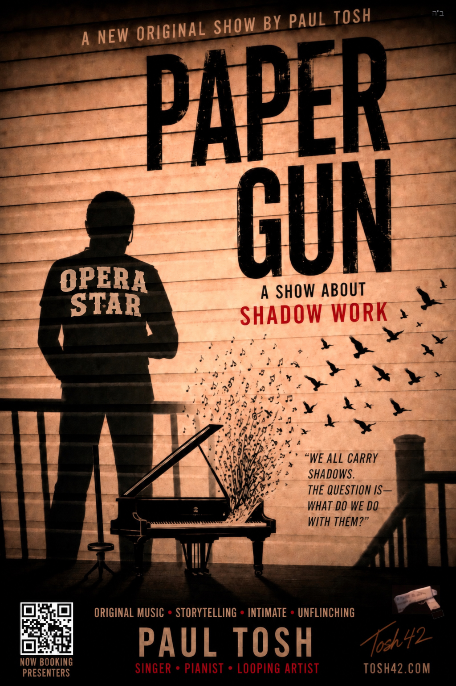
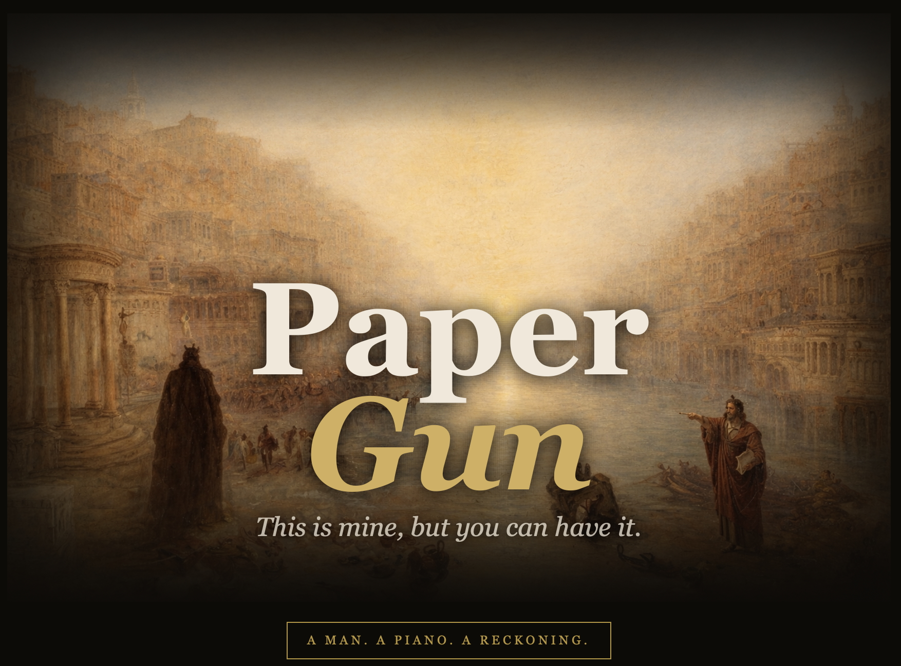
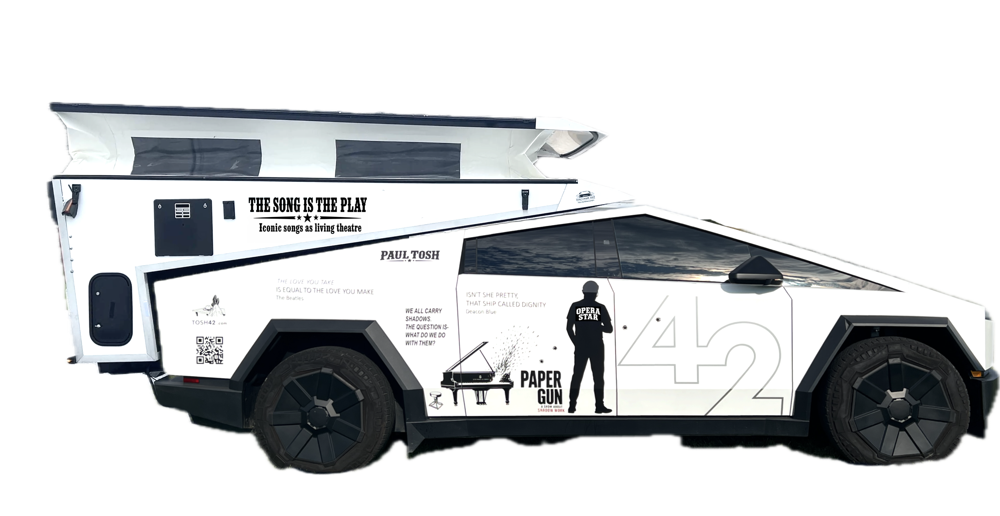

Full Programme Poster


Available for venues across the US & Canada
◆ Book Now
Paper Gun — Setting the Scene
Left alone in what looks like a Turner Venetian oil — a painted street scene of water with a hazy sunshine and beautiful buildings lining into the distance — our protagonist wonders: "this is probably not real either, but that's what had been painted around me" — to then have the painter removed from the painting the second he hit her with the final line: "that's it, that's the difference."
And he was alone — alone in this beautiful setting, to be alone, to be alone for the rest of time. Initially it seemed like a most horrible thing, but…!
Leading up to that she'd come, was visiting him in his room. The parting scene had started with her there. There was an emotional hug; she said, can we take it down an emotional notch? A shadow of someone could be seen in the hall… was she going to chat with them, to deflect and avoid him? He said, can we close the door, and chat.
They entered some of the usual competitive arenas — where everything's polarity, everything's some criticism of the other in some form; it just seemed unavoidable. It eventually led to her saying "so you'd rather hurt me" — and he said, with a presence of mind to be able to say it this time: "I'm not trying to hurt you, I'm trying to prevent myself from being hurt… and that's it, that's the difference."
Before that there was some light interaction and dialogue — and he was trying to hug her, as if to say: that's really what I have to say. But it was impossible. She was too stiff. It was impossible.
Prior to that he'd said, "maybe I can play some piano. I'm doing some interesting stuff these days." He played a little, but that didn't last — she'd come to visit him as if to wonder what was going on, as if to ask "what's wrong"; of course he would be the one to venture to say: OK, let's talk.
A Word Before You Book — Honestly
Let me be upfront, because you'll sense it anyway: this show goes places most entertainment doesn't. It's about an inner tangle — and some of your audience will recognize it from the inside. That sounds like a risk. I understand why presenters hesitate.
Here's what twenty years of rooms have taught me: people aren't afraid of depth. They're afraid of depth handled carelessly. This is handled with care — framed before, held during, closed gently after (here's exactly how). And the hard material never stands alone: it arrives woven between Sinatra, The Beatles, Billy Joel — songs your audience already trusts. The show earns the deep moments; it doesn't ambush anyone with them.
What I've seen live, over and over: the room leans in. People carrying weight they couldn't name hear a song name it — and leave lighter. That's not my claim; ask my presenters.
And if this still isn't the year for it — book The Song Is The Play instead. It's the same voice, the same piano, all warmth. Plenty of my presenters started there. The deep show will be here when your room is ready.
See It For Yourself
Paper Gun — The Clip
More Clips
"Who Wrote That?"
Wisdom From the Show
"After silence, that which cannot be put into words, but cannot remain unexpressed"Hugo / Huxley
Full Programme Poster

Paul Tosh presents ◆ A Premium Solo Show ◆ tosh42.com
A man. A piano. A reckoning.EMOTIONALLY ENGAGING · THEATRICAL · INDEPENDENCE
Paper Gun is an original song cycle — An operetta in three acts of twenty minutes each. A paper theme tied to the shadow and philosophical parallels about sacrifice, in which one man plays both sides of himself. Ending in independence and warmth, taking no prisoners on the way.
What this work does in the rooms it reaches: for the elderly, for the isolated, for people carrying weight they can't name until a song names it for them — is real. I've been in an impoverished enough state myself to know what I'm giving back.
The Programme
There are two people in every difficult relationship. In my experience — they're often the same person. Say something true to someone you love and if the painter takes themselves out of the painting, you are left in something beautiful, but still holding both sides of whether you did the right thing. Tonight you're going to get a sense of independence, and what that means for better for worse, and ultimately for better. A vicarious exercise through your French brother "I'm alright, Jack" — your shadow work — whoever that is for you, because it's in you / not outside of you.
The protagonist contains extremes. "I know in this song the bully is me, but the bully is feeling free." He's not the innocent party observing. He's someone who recognises the negative pull in himself, fights it, and emerges. That's the whole arc. This work operates on multiple registers simultaneously — emotional, theatrical, philosophical — and different audiences will unlock different layers.
A niche unconventional product; Therapeutic theatrical performance to help people — it's punchy, strong, lands at the heart.
Click a song, see a line.
Act One · The Trap · Paper Gun
Act Two · The Struggle · Paper Crown
Act Three · The Emergence · Paper Heart
The Operetta — Live
A selection of live full videos — the pieces tested over the years that became Paper Gun.
What People Say
"Last night made me feel like the pre-WWII era of the arts in society! Loved it."Libby Fox (hostess) — Charleston home concert — swampfoxdockandmarine.com
"It's Beatles, it's U2, it's Bob Dylan, Lenny Kravitz and Billy Joel, it's jazz — you write this style and that style — you have obviously been influenced by all the songs you have been playing through the years. The world would welcome something like this now with open arms. The songs are timeless. It's an album like Sgt. Pepper."Orna Wellman — Drama and English teacher, Canada — instagram.com/ornawellman
"Really good solid organic original material — it has to be experienced live. They're not simple in terms of structure nor in terms of emotional content."Miguel Cavazos — Session drummer, LA
"I especially like the substantive intellectual meaning that you weave into your music. You remind me of the inspiring Shlomo Carlebach."Rabbi Daniel Lapin — RabbiDanielLapin.com
"I can't believe the level of artistry you're bringing to the people in these residential homes. I bet they'd never seen anything like it before."Joe Tepperman — Author & theater writer
"A deeply personal, high value artistic offering. Light, serious, fun. Paul's songs are alive — you have to live with them. Paul also sets the standard when it comes to camaraderie and healthy artistic sharing."Mesoud Benasuly — Session Bass Player, New York City
"I think I've listened to that song a hundred times — but that might be the first time I've actually heard it."Video testimonial — audience member
"A poetic call to presence — reminding us that the pursuit itself is the purpose, and that love, more than anything, is the foundation of it all. So much fun to watch Paul's creative brain at work… a true pleasure."Amy Kirshtein — at Libby & Daniel's home concert
"This is as different a performance as anything I've seen in the Listening Room Network. It's really more performance art than musical performance — as much poetry as it is music. His piano playing is just exceptional."Listening Room Network — Audition Review, August 2025
From the audience —
For Whom & Where
This is not ambient entertainment. It is a performance that asks something of its audience — and gives in return.
It's a solo show in which the audience tracks two distinct presences, even though it's one body at the piano. If the audience has the booklet with the character lines marked, they become co-readers of the drama as it unfolds.
The Audience
The Venues
Investment
$POAAll-inclusive · Travel · Accommodation · Sound
Paul travels in a custom self-contained performance camper, making him available for venues across the entire United States and Canada — with no hotel riders, no staging requirements, no hidden costs.

Paul works across a wide range of venues and budgets. Please get in touch to discuss.
Referrals
If a venue or community comes to mind that you think would be a good fit — a country club, a shul, a JCC, a supper club, a home concert host — I'd love to hear from you. I offer a referral fee for any booking that comes through your introduction.
Pass It Along →About the Performer
Born in Scotland. Formed in Europe. Seasoned across a decade of performances for senior communities on the American East Coast. Paul Tosh is a therapeutic musical performer whose work refuses the easy distinction between entertainment and art.
His signature approach — Song Is The Play — treats every performance as a piece of theatre: looping piano, dramatic song, and the kind of presence that makes a familiar melody feel heard for the first time. Paper Gun is his most personal and fully realised work to date: a show about damage, clarity, and the quiet violence of the truth.
Paul's celebrated concert show — Billy Joel, The Beatles, Bob Dylan, Sinatra, Neil Diamond, and originals, performed as theatrical prose with looping piano.
See the full show →Video Testimonials
Credits
Piano & Vocals
Paul Tosh
Narrator
Mesoud Benasully
Executive Producer
Rabbi Eli Gestetner — The Signpost
With thanks to Claude AI for incredible organising help and web design.
With ultimate thanks to G-d.
Book the Show
To discuss availability, venue fit, or pricing, reach out directly. Paul responds personally to every enquiry.
Ready to book? Paul responds personally to every enquiry.
◆ Book Now